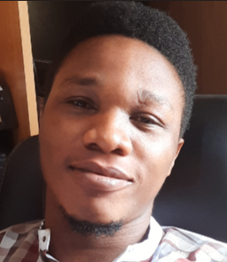

Alasi Stephen

Summary
I seek a medium where I can effectively use my technical competence as well as project management
skill. My utmost goal is to contribute efficiently to organizational goals through active involvement,
ownership, professionalism, accountability, excellence, character, hard work and team work.
Education
- Post Graduate Diploma, Project Management - Lagos State University (2021-2022)
- Higher National Diploma, Civil Engineering - Yaba College of Technology (2014-2017)
- National Diploma, Civil Engineering - Auchi Polytechnic (2010-2013)
Work Experience
Skills
- Good knowledge of Microsoft office suite.
- Good analytic, pattern recognition.
- Good communication skills.
- Good usage of BUSY Accounting Software.
- High quality report writing skills acquired from writing regular analysis reports.
- Time management skills.
Awards and Certifications
- Employee of the Year - Twins Faja Nig. Ltd. (2021)
Others